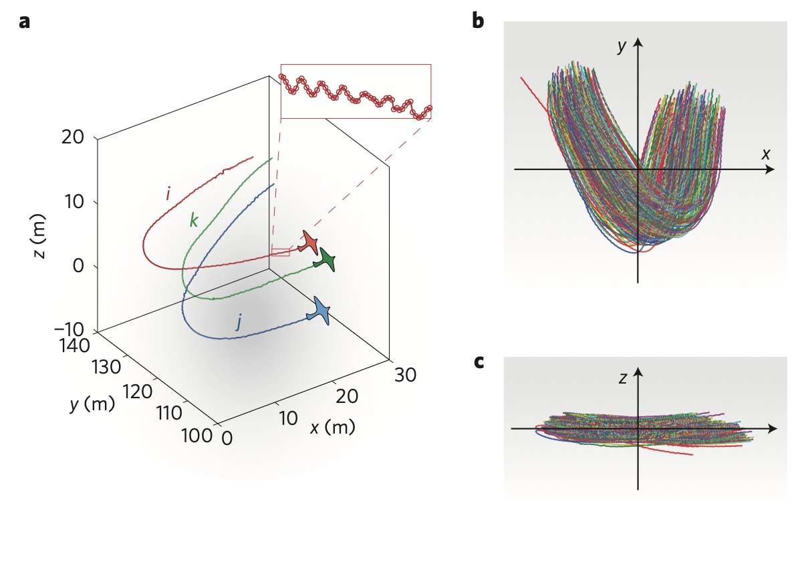
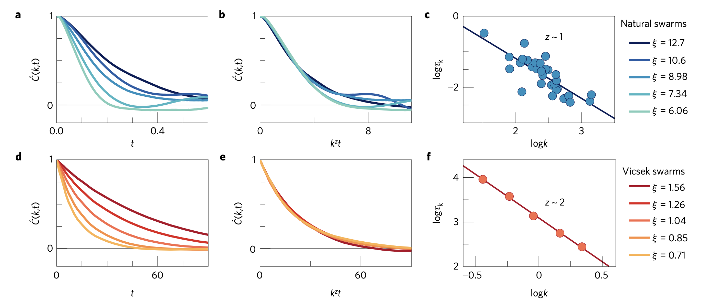
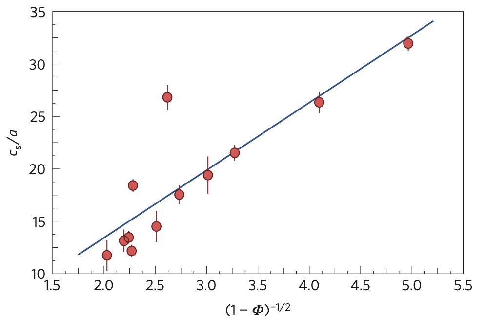
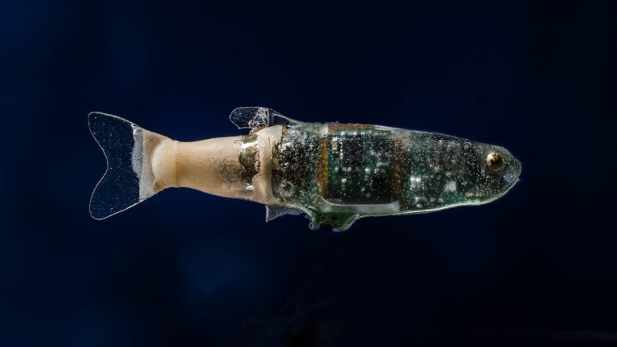

Vicsek Model and Flocking Transition
Vicsek Model and Flocking Transition
The Vicsek model, introduced in 1995, provides a minimal framework for understanding collective motion in active systems. It was motivated by striking observations of coordinated movement across diverse biological systems, from bird flocks and fish schools to bacterial colonies and insect swarms. These natural systems display remarkable collective behaviors despite the absence of any centralized control mechanism:
Bird flocks: Starling murmurations demonstrate rapid information propagation, with thousands of birds turning almost simultaneously. High-speed photography has revealed that changes in direction can spread across a flock at speeds faster than single-bird reaction times would allow.
Fish schools: Experimental studies show that fish maintain remarkably consistent distances from neighbors while executing coordinated turns. When startled, information about predator threats propagates as a wave through the school at speeds much higher than individual swimming speeds.
Bacterial colonies: Time-lapse microscopy of bacterial swarms reveals long-range orientational order spanning distances hundreds of times larger than individual bacteria. These colonies can navigate complex environments despite each bacterium having only local sensory capabilities.
Locust swarms: Field studies demonstrate that locusts maintain aligned motion over vast distances despite considerable environmental perturbations, with density-dependent transitions from disordered to ordered movement.
The Vicsek model represents one of the simplest models demonstrating a non-equilibrium phase transition from disordered motion to coherent flocking behavior, and has become a cornerstone of the active matter field.
The model’s profound impact on the active matter community stems from its demonstration that simple local alignment rules can produce complex collective phenomena without any centralized control. This insight has inspired thousands of subsequent studies, from bacterial colonies and cellular tissues to robotic swarms and synthetic active colloids. The Vicsek model established the paradigm that active systems—those consuming energy to maintain non-equilibrium states—can exhibit fundamentally different physics from their passive counterparts.
Recent experimental studies have provided crucial insights that both validate and challenge aspects of the Vicsek model. Cavagna et al. (2017) demonstrated the emergence of dynamic scaling laws in natural swarms of midges, establishing that these biological collectives exhibit critical behavior analogous to physical systems near phase transitions. Their groundbreaking analysis revealed that spatio-temporal correlation functions in different swarms can be rescaled using a single characteristic time, which grows with correlation length according to a dynamical critical exponent z ≈ 1. This finding stands in stark contrast to both equilibrium models and simulations of self-propelled particles (including the Vicsek model), which typically yield z ≈ 2. This discrepancy suggests that natural swarms belong to a novel dynamic universality class not captured by existing theoretical frameworks.

The study provided experimental evidence for non-dissipative modes in the relaxation dynamics of swarms, indicating that previously overlooked inertial effects are essential to describe collective animal motion accurately. Unlike the original Vicsek model, which assumes instantaneous alignment and purely dissipative dynamics, real biological systems appear to incorporate behavioral inertia that fundamentally alters information propagation through the group.
This finding aligns with research by Attanasi et al. (2014) on information transfer in starling flocks during collective turns. Their empirical observations revealed that direction changes propagate across flocks with a linear dispersion law and negligible attenuation, dramatically minimizing group decoherence. This linear and undamped propagation stands in direct opposition to standard models of collective motion, including the original Vicsek model, which predict diffusive transport of information that would cause significant group fragmentation during rapid maneuvers.
The authors identified behavioral inertia—the tendency of individuals to resist sudden changes in their state of motion—as the crucial missing ingredient in existing models. By incorporating this inertia into a theoretical framework built on spontaneous symmetry breaking and conservation principles, they successfully reproduced the observed linear propagation. Importantly, their theory predicted that information transfer becomes faster as a group’s orientational order increases, a prediction they confirmed through detailed analysis of empirical data. This suggests that the strong polarization observed in many animal groups may have evolved specifically to enable rapid collective decision-making.
In this model, self-propelled particles move with constant speed while adjusting their direction based on their neighbors. The update rule is elegantly simple:
\[\theta_i(t+1) = \langle \theta_j(t) \rangle_{j \in \mathcal{N}_i} + \eta \xi_i(t)\]
where \(\theta_i\) is the direction of the \(i\)-th particle, \(\mathcal{N}_i\) represents its neighbors within a radius \(R\), and \(\xi_i(t)\) is a random variable uniformly distributed in \([-\pi,\pi]\) with noise strength \(\eta\).
The particles move with position updates:
\[\mathbf{r}_i(t+1) = \mathbf{r}_i(t) + v_0 (\cos\theta_i(t+1), \sin\theta_i(t+1))\]
The Vicsek model bears striking resemblances to classical equilibrium models in statistical physics, particularly the XY model, while also connecting to the simpler Ising model. Like the two-dimensional XY model, the Vicsek system has continuous rotational symmetry—particles can point in any direction in the plane—and exhibits ordering through alignment interactions. Both models use similar order parameters measuring the degree of collective alignment. However, a crucial difference emerges: while the Mermin-Wagner theorem prohibits long-range order in the 2D equilibrium XY model at finite temperature due to thermal fluctuations, the active Vicsek system can maintain stable ordered states because it operates far from equilibrium through constant energy injection.
The connection to the Ising model is more conceptual but equally illuminating. Both models involve local alignment interactions leading to global order-disorder transitions, with the key distinction being that Ising spins are discrete (up/down) while Vicsek particles have continuous orientations. In some sense, the Vicsek model can be viewed as a “dynamic Ising model” with continuous spins, constant motion, and broken detailed balance—features that fundamentally alter the nature of the phase transition.
The key physical insight from the Vicsek model is the emergence of a phase transition controlled by two parameters: the noise strength \(\eta\) and the particle density \(\rho\). As noise decreases or density increases, the system transitions from a disordered gas-like state to a coherent flock where particles move collectively in a common direction.

This transition is typically characterized by the order parameter:
\[\phi = \frac{1}{Nv_0}\left|\sum_{i=1}^{N} \mathbf{v}_i\right|\]
Which measures the degree of alignment between particle velocities, ranging from 0 (complete disorder) to 1 (perfect alignment).
The nature of this transition remains an active research topic, with evidence suggesting it may be a first-order transition with unique properties related to long-range correlations and giant number fluctuations. These features distinguish it from equilibrium phase transitions, making it a paradigmatic example of non-equilibrium statistical physics.


- Minimal ingredients: Self-propelled particles moving at constant speed with local alignment interactions and noise
- Simple update rules: Each particle updates its direction to the average of neighboring particles plus random noise
- Control parameters:
- Noise strength \(\eta\) (disrupts alignment)
- Particle density \(\rho\) (enhances alignment through more interactions)
- Interaction radius \(R\) (determines neighborhood size)
- Order parameter: Normalized average velocity \(\phi\) measures global alignment (\(0\) = disorder, \(1\) = perfect alignment)
- Non-equilibrium phase transition: Transition from disorder to order as \(\eta\) decreases or \(\rho\) increases
- Long-range order in 2D: Unlike equilibrium systems (constrained by Mermin-Wagner theorem), can maintain true long-range order
- Giant number fluctuations: Exhibits unusually large density variations not seen in equilibrium systems
- Universality class: Belongs to a distinct non-equilibrium universality class with unique critical exponents
- Applications: Successfully applied to bird flocks, fish schools, bacterial colonies, cell migrations, and artificial swarms
Interactive Vicsek Model Simulation
Below is an interactive simulation of the Vicsek model, demonstrating how local alignment interactions lead to global order. You can adjust key parameters to observe how they affect the emergence of flocking behavior.
This simulation demonstrates the core principles of the Vicsek model:
Local Alignment: Each particle adjusts its direction to align with neighbors within the interaction radius.
Noise Influence: Random noise disrupts perfect alignment, mimicking individual variation or environmental disturbances.
Phase Transition: By adjusting the parameters, you can observe a transition from disordered motion (high noise, small radius) to coordinated flocking (low noise, large radius).
Emergent Behavior: The global ordering emerges spontaneously from purely local interactions, without any centralized control.
Try different parameter combinations to explore how these factors affect the collective dynamics. For instance, increasing the noise while keeping other parameters constant will eventually break down the ordered flocking state, illustrating the noise-induced phase transition that made the Vicsek model so influential in the field of active matter.
The nature of the order-disorder transition in the Vicsek model has been the subject of significant debate in the scientific community. In their original 1995 paper, Vicsek and colleagues characterized the transition as continuous (second-order), with the order parameter scaling as \((\eta_c-\eta)^\beta\) with \(\beta \approx 0.45\). This classification aligns with many traditional continuous phase transitions in equilibrium statistical physics, where the order parameter grows continuously from zero as the control parameter crosses a critical threshold.
Continuous phase transitions are characterized by several key features that the Vicsek model appears to share:
Scale-free correlations: Near the critical point, correlation lengths diverge, leading to scale-invariant behavior where fluctuations occur at all length scales. This property is evidenced in the Vicsek model by the emergence of clusters of aligned particles at all scales near the transition.
Critical exponents: The behavior near the transition can be described by power laws with characteristic critical exponents. The original Vicsek model revealed an order parameter exponent \(\beta \approx 0.45\), which differs from known equilibrium universality classes, suggesting a novel universality class specific to active systems.
Universality: The values of these exponents are expected to be universal, depending only on fundamental properties like symmetry and dimensionality rather than microscopic details. Recent work by Jentsch and Lee (2024) has proposed that the Vicsek model indeed represents a novel universality class with distinct critical exponents that have been confirmed through both theoretical analysis and simulations.
Dynamic scaling: Time-dependent correlation functions exhibit scaling properties near the critical point, as demonstrated by Cavagna et al. (2017) in natural swarms, though with important differences from the Vicsek model predictions.
However, subsequent studies by Chaté and collaborators (2008) challenged this view, presenting evidence that the transition might actually be first-order (discontinuous) under certain conditions. Their detailed numerical analyses revealed that the apparent continuous nature of the transition might be an artifact of finite-size effects and simulation protocols. This controversy has led to extensive investigations of how factors such as boundary conditions, system size, and update rules affect the observed transition.
Recent research by Solon, Chaté, and Tailleur (2015) has offered a unifying perspective by framing the Vicsek transition as analogous to a liquid-gas transition rather than a simple order-disorder one. In this view, the system undergoes microphase separation, leading to traveling bands of high-density ordered regions surrounded by a disordered gas phase. This interpretation helps explain the apparent discontinuity while connecting to the original observations of scaling behavior.
Remarkably, the detailed nature of the transition depends critically on fluctuations in the system, which select between different possible inhomogeneous patterns. This highlights a fundamental feature of active matter: the essential role of nonequilibrium fluctuations in determining macroscopic behavior, a feature without parallel in equilibrium systems undergoing continuous phase transitions.
Topological Interactions in Collective Motion
The original Vicsek model uses metric interactions, where particles align with neighbors within a fixed radius. However, studies of starling flocks by Ballerini et al. (2008) revealed that birds interact with a fixed number of neighbors rather than all individuals within a certain distance. This topological interaction scheme has profound implications for collective behavior.
In topological Vicsek models, each particle interacts with its k nearest neighbors regardless of their distance. The update rule becomes:
\[\theta_i(t+1) = \langle \theta_j(t) \rangle_{j \in \mathcal{K}_i} + \eta \xi_i(t)\]
where \(\mathcal{K}_i\) represents the k nearest neighbors of particle i.
This seemingly subtle change produces several significant effects:
Scale-free correlation: Topological interactions allow correlation lengths to scale with group size, maintaining cohesion across varying densities.
Robustness to density fluctuations: The system can sustain coherent motion even when local density varies dramatically.
Enhanced information transfer: Information propagates more efficiently through topologically connected networks compared to metric ones.
High-speed tracking experiments of starling flocks found that birds consistently interact with their 6-7 nearest neighbors, regardless of flock density. This topological interaction rule appears optimized for both robust cohesion and rapid information transfer.
Voronoi-Based Interactions
A refinement of topological interactions comes through Voronoi tessellation, where space is partitioned into regions closest to each particle. In the Voronoi Vicsek model, particles interact with their Voronoi neighbors—those sharing a boundary in the tessellation.

The key advantage is biological realism: a Voronoi diagram naturally identifies which neighbors are directly “visible” to each individual, closely matching how visual animals like birds or fish perceive their surroundings.
The Voronoi approach gives:
\[\theta_i(t+1) = \langle \theta_j(t) \rangle_{j \in \mathcal{V}_i} + \eta \xi_i(t)\]
where \(\mathcal{V}_i\) represents the Voronoi neighbors of particle i.
Simulations show that Voronoi interactions produce realistic features observed in animal groups:
- Dynamic, responsive local structure that adapts to environmental challenges
- Anisotropic interaction regions that prioritize individuals in the direction of motion
- More efficient information propagation compared to fixed-radius interactions
Recent work by Bastien and Romanczuk (2020) showed that Voronoi-based models better replicate the emergent properties of fish schools, particularly the characteristic “milling” behavior where groups form rotating torus patterns.
The Voronoi framework also provides natural extensions to include visual occlusion effects, where individuals can only interact with neighbors they can see—a constraint believed to be important in the self-organization of dense biological collectives.
Delay Vicsek Model: Information Transfer with Memory
Recent empirical studies revealing linear wave propagation in starling flocks highlight a key limitation of the standard Vicsek model: it assumes that particles respond instantaneously to the orientation of their neighbors. However, real biological agents—whether birds, fish, or cells—can’t react immediately due to sensory processing time, neural delays, and mechanical constraints of their bodies. This limitation has motivated the development of delay Vicsek models, where particles adjust their orientation based on the state of their neighbors at some time in the past.
The delay Vicsek model modifies the standard update rule to incorporate this temporal lag:
\[\theta_i(t+1) = \langle \theta_j(t-\tau) \rangle_{j \in \mathcal{N}_i} + \eta \xi_i(t)\]
where \(\tau\) represents the time delay. This seemingly simple modification produces profound changes in the collective dynamics:
Wave-like information propagation: With appropriate delay times, perturbations propagate through the system as waves rather than diffusively, matching the linear propagation observed in natural flocks.
Emergence of oscillatory states: The system can develop spatiotemporal patterns like traveling waves, oscillations, and even chaotic states not seen in the standard model.
Enhanced stability in some regimes: Counterintuitively, moderate time delays can sometimes stabilize ordered motion by dampening overreactions to fluctuations.
The role of delay becomes particularly important when considering how flocks respond to rapid environmental changes like predator attacks. Simulations by Mishra et al. (2012) showed that the delay-induced wave-like propagation allows information about threats to spread through a flock up to 20 times faster than would be possible through sequential neighbor-to-neighbor transmission.
Experimental validation comes from studies like those by Calovi et al. (2018), who analyzed trajectory data from schooling fish and found evidence of memory effects in their alignment behavior. They showed that fish respond not just to their neighbors’ current positions and orientations, but to an effective “anticipated” position based on past movement. This anticipation mechanism effectively implements a negative delay (prediction rather than reaction), which further enhances the school’s ability to maintain cohesion during rapid maneuvers.
Theoretically, the delay Vicsek model provides a critical link between microscopic interaction rules and macroscopic wave propagation. When properly formulated with inertial effects (resistance to orientation changes), the model produces a linear dispersion relation for small perturbations:
\[\omega \approx c_s q + i\gamma q^2\]
where \(c_s\) is the propagation speed and \(\gamma\) is a damping coefficient. This matches the observed dynamics of starling flocks far better than the purely diffusive propagation (\(\omega \sim iq^2\)) predicted by the standard Vicsek model.
Current research is exploring how heterogeneous delays (different response times for different individuals) affect collective dynamics, and how natural systems might exploit these delay effects to optimize information transfer while maintaining robust coordination in noisy environments.
Information Propagation in Active Groups
Understanding how information flows through active matter systems provides crucial insights into their collective behavior and response to perturbations. A fundamental question is: how do changes in motion propagate through a flock or swarm, allowing the group to respond coherently to environmental stimuli or threats?
In standard models of collective behavior, like the Vicsek model we discussed earlier, information transfer is typically predicted to be diffusive. To understand why this diffusion equation arises, we need to examine what happens when small disturbances propagate through the system.
When we linearize the Vicsek model around a homogeneously ordered state (where all particles are moving in roughly the same direction), we’re essentially looking at how small deviations from perfect alignment evolve over time. In the ordered phase, each particle adjusts its direction based on the average direction of its neighbors plus some noise.
The key insight is that this alignment process resembles a random walk in orientation space. When a particle’s orientation differs slightly from its neighbors, it tends to adjust back toward the average, but imperfectly due to noise. This process is mathematically analogous to a particle undergoing Brownian motion, which is the classic example of diffusion.
The mathematical formulation yields a diffusion equation for the propagation of orientation fluctuations:
\[\frac{\partial \phi}{\partial t} = D \nabla^2 \phi\]
where \(\phi\) represents the orientation angle and \(D\) is a diffusion constant. This diffusion equation has a characteristic dispersion relation:
\[\omega(q) \sim iq^2\]
where \(\omega\) is the frequency and \(q\) is the wavevector. In physical terms, this means that information about direction changes would spread through the group as a diffusive process, where the distance covered scales with time as \(x \sim \sqrt{t}\).
To find the dispersion relation, we can analyze how small perturbations propagate through the system. For a diffusion equation:
\[\frac{\partial \phi}{\partial t} = D \nabla^2 \phi\]
Let’s consider a plane wave solution of the form:
\[\phi(\mathbf{r},t) = \phi_0 e^{i(\mathbf{q}\cdot\mathbf{r} - \omega t)}\]
Substituting this into the diffusion equation:
\[-i\omega \phi_0 e^{i(\mathbf{q}\cdot\mathbf{r} - \omega t)} = -D q^2 \phi_0 e^{i(\mathbf{q}\cdot\mathbf{r} - \omega t)}\]
Simplifying:
\[\omega = iDq^2\]
This is the dispersion relation for diffusive processes. The imaginary coefficient indicates that these waves are damped rather than propagating, with the amplitude decaying as \(e^{-Dq^2t}\). Longer wavelengths (smaller \(q\)) decay more slowly than shorter wavelengths.
The diffusive nature of information transfer poses a serious problem for biological groups: during rapid maneuvers, like avoiding a predator, diffusion would cause significant decoherence—different parts of the flock would receive the information at vastly different times, potentially fragmenting the group. This is especially problematic for large flocks, where diffusion would be far too slow to maintain cohesion during quick turns.
Wave-like Information Transfer in Starling Flocks
High-resolution tracking experiments of starling flocks by Attanasi et al. (2014) revealed a fundamentally different mechanism of information propagation. Using a system of three synchronized high-speed cameras recording at 170 frames per second (see Figure 1), they captured the three-dimensional trajectories of individual birds within flocks of up to 3,000 starlings during natural turning events.

Their analysis revealed that direction changes propagate linearly in time (rather than diffusively) and with negligible damping. When one bird initiates a turn, this directional change spreads through the flock as a wave, with a nearly constant speed of propagation. The experimental data showed a clear linear relationship between the distance from the initiation point and the time at which birds responded, contradicting the quadratic relationship expected from diffusive models.
The researchers measured propagation speeds of 20-40 meters per second—remarkably faster than the flight speed of individual birds (about 10 m/s). This high-speed propagation allows information to reach all flock members almost simultaneously, enabling the dramatic, seemingly choreographed turns observed in starling murmurations.
The Role of Behavioral Inertia
To explain these observations, Attanasi and colleagues developed a theoretical framework based on three key physical concepts:
Behavioral inertia: Unlike the assumption in most models that individuals can instantly adjust their direction, real birds exhibit resistance to sudden changes in their state of motion. This inertial effect fundamentally alters the equations of motion.
Social interactions: Birds align their motion with neighbors, creating a coupling between nearby individuals.
Conservation laws arising from symmetry: The rotational invariance of the system (a gauge symmetry) leads to a conservation law via Noether’s theorem. When combined with behavioral inertia, this produces wave-like rather than diffusive propagation.
These elements lead to an equation of motion resembling a wave equation rather than a diffusion equation:
\[\frac{\partial^2 \phi}{\partial t^2} = c^2 \nabla^2 \phi\]
This supports wave-like propagation of information with a linear relationship between distance and time, allowing even large flocks to turn coherently.
Mathematically, they introduced a two-dimensional order parameter \(\phi_i\), representing the angle between bird \(i\)’s direction of motion and that of the flock. In the highly ordered regime where \(\phi_i \ll 1\), they linearized the dynamics.
With behavioral inertia included, the system’s dynamics is governed by D’Alembert’s wave equation rather than the diffusion equation:
\[\frac{\partial^2 \phi}{\partial t^2} - c_s^2 \nabla^2 \phi = 0\]
This wave equation has a linear dispersion relation:
\[\omega(q) = c_s q\]
This means that information travels linearly with time (x = c_s t), much faster than diffusive propagation would allow. This explains the observed linear propagation of turning information through the flock.
Evidence from Natural Swarms and Other Systems
Complementary evidence for non-diffusive dynamics comes from studies of natural midge swarms. Cavagna et al. (2017) analyzed the spatio-temporal correlation functions in midge swarms and found that different swarms can be rescaled using a single characteristic time that grows with correlation length according to a dynamical critical exponent z ≈ 1, rather than z ≈ 2 expected for diffusive processes.

Similar wave-like propagation has been observed in fish schools. Rosenthal et al. (2015) documented that startled golden shiners (Notemigonus crysoleucas) generate a wave of behavioral change that propagates through the school at a speed of approximately 15 body lengths per second—much faster than would be predicted by nearest-neighbor reaction time models. This behavioral wave allows the entire school to respond to a threat almost simultaneously, dramatically improving collective escape success.
The behavior of spatiotemporal correlation functions reveals the underlying physics of information transfer in collective systems:
Correlation Function Definition: \[C(r,t) = \langle \delta\mathbf{v}(\mathbf{r}+\mathbf{r}',t+t') \cdot \delta\mathbf{v}(\mathbf{r}',t') \rangle\]
where \(\delta\mathbf{v}\) represents velocity fluctuations around the mean.
Dynamical Scaling: For systems with critical behavior, the correlation function follows a scaling form: \[C(r,t) = r^{-(d-2+\eta)}f(t/r^z)\]
The dynamical critical exponent \(z\) determines how information propagation scales with distance:
- \(z \approx 2\): Diffusive propagation (standard models)
- \(z \approx 1\): Linear wave propagation (observed in bird flocks)
Experimental Evidence: In midge swarms, different-sized groups collapse onto a single curve when time is rescaled by \(t/r^z\) with \(z \approx 1\), providing strong evidence for non-diffusive dynamics that enables rapid collective response.
The Speed-Order Relationship
A key prediction of the wave-propagation theory is that the speed of information transfer should increase with the group’s orientational order. Attanasi and colleagues confirmed this prediction by analyzing turning events in different flocks, finding that the propagation speed \(c_s\) increases with the polarization \(\Phi\) of the flock.

This relationship has profound implications for understanding the functional benefits of alignment in animal groups. The high degree of polarization commonly observed in fish schools and bird flocks may have evolved specifically to enable rapid information transfer, allowing coordinated responses to environmental challenges.
Functional Benefits of Wave-Like Propagation
The linear, undamped propagation allows flocks to execute coherent turns without fragmentation, as information about direction changes reaches all members with minimal delay. The turning dynamics represents what physicists call “second sound”—propagating waves of orientation rather than density, analogous to phenomena observed in superfluids and crystalline solids.
This mechanism explains how starling flocks maintain their remarkable cohesion during complex aerial maneuvers. Their study reveals that biological collectives have evolved mechanisms that effectively overcome the limitations of diffusive information transfer, enabling rapid and coordinated responses essential for survival.
Applications and Future Directions
These findings highlight how active biological systems can achieve robust collective behavior through mechanisms that incorporate memory effects (behavioral inertia) and leverage fundamental principles of symmetry and conservation. The mathematical framework bridges statistical physics, information theory, and collective behavior, showing how local interactions with inertial effects produce the coherent global coordination observed in natural flocks.
Recent experimental work by Bonnet et al. (2020) on hybrid systems—where autonomous robots interact with living fish schools—has demonstrated the possibility of injecting information through controlled perturbations. By programming a robotic fish with specific behavioral rules including appropriate behavioral inertia, they successfully influenced the collective motion of live zebrafish schools, steering their direction and even inducing consensus changes.

These hybrid systems offer promising avenues for both testing theoretical models of information propagation and developing applications for guiding collective behavior through minimal interventions. Understanding the wave-like nature of information transfer could enable more effective crowd management systems, wildlife conservation strategies, and even targeted manipulation of biological collectives for ecological applications.
Current research continues to explore how behavioral inertia interacts with other collective mechanisms like leadership dynamics, selective attention, and variable interaction networks to create the remarkably robust yet responsive collective behavior observed across diverse animal groups in nature.